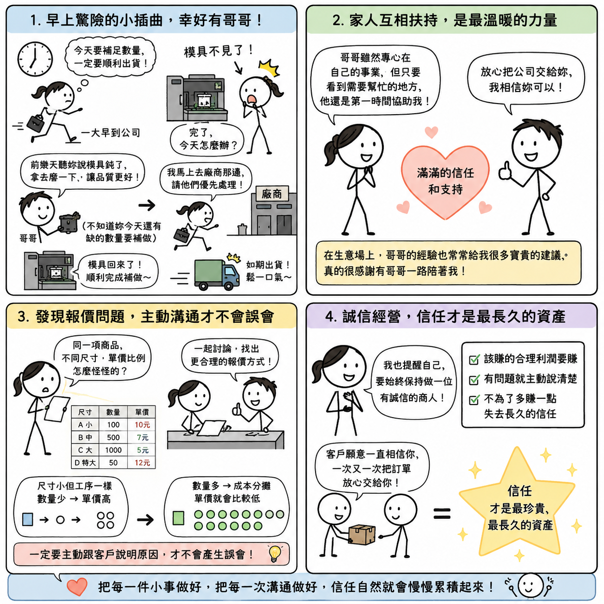

日期：2026/07/06

今天一大早，我就比平常更早到公司。因為昨天加班時，發現今天要出貨的一批產品，數量竟然少算了一些，所以今天一定要趕快把後加工補做完成，才能順利出貨。
結果一到公司，我整個傻眼。後加工的機台模具竟然不見了！
當下真的有點緊張，心想：「完了，今天怎麼辦？」後來才知道，原來哥哥前幾天聽我說模具已經有點鈍了，就先把它拆下來送去磨，希望刀口可以更銳利一點，做出來的品質也會更好。只是他不知道，我今天還有一批數量不足的貨要趕著補做，所以才會發生這個小插曲。
哥哥的出發點完全是想把事情做好。後來他一知道我急著要出貨，立刻跑去廠商那邊，請對方優先幫忙處理，再用最快的速度把模具送回公司。最後，我也順利把剩下的數量完成，如期把貨交出去。那一刻真的鬆了一大口氣。
今天也讓我覺得，其實家族企業雖然有家族企業的優點，也有家族企業的挑戰，但很多時候，那份彼此照應的溫暖，是其他地方比較少感受到的。
哥哥現在大部分的時間，都投入自己的事業，公司很多事情已經交給我負責了。可是只要看到哪裡需要幫忙，他還是會第一時間跳出來協助。回頭想想，哥哥願意放心把公司交給我經營，本身就是一份很大的信任。而他在生意場上累積了這麼多年的經驗，也常常在我遇到問題的時候，給我很多寶貴的建議。
真的很感謝有哥哥一路陪著我，讓我在經營公司的路上，多了一份安心。
下午整理明天要出貨的資料時，又發現另一個問題。同一項商品有很多不同尺寸，但我重新把每一個規格的單價反推回去算，才發現有些價格比例怪怪的，有的偏低，有的又偏高。
後來我就和哥哥一起討論，看看有沒有更好的報價方式。我自己也想到，其實除了調整價格之外，更重要的是要主動跟客戶說明原因。
因為有些規格雖然尺寸比較小，但製作工序和大尺寸幾乎是一樣的，只是數量比較少，所以平均下來單價自然就會比較高；而數量多的產品，因為成本可以分攤，所以單價就會比較便宜。
如果沒有把這些原因說清楚，客戶只看到價格，很容易就會產生誤會。時間久了，不但可能影響彼此的信任，甚至還可能因此流失訂單。想到這裡，我也想起導師常提醒我們，做每一件事情，都要細細檢查、仔細確認。
我也提醒自己，要始終保持做一位有誠信的商人。該賺的合理利潤要賺，但如果發現報價有需要調整的地方，就應該主動、坦誠地和客戶溝通，而不是裝作沒看見，也不要因為眼前多賺一點，就失去了客戶長久的信任。
我一直覺得，做生意不是只看今天賺了多少，而是客戶願不願意一直相信你，願不願意一次又一次把訂單放心交給你。因為真正做得長久的生意，靠的不是運氣，也不是話術，而是一步一步累積起來的信任。
今天雖然一整天都在忙工作的事情，但我卻覺得收穫很多。早上的事情，讓我感受到家人之間互相扶持的溫暖；下午的事情，也再次提醒我，誠信永遠比眼前的利益更重要。
把每一件小事做好，把每一次溝通做好，信任自然就會慢慢累積起來。而我相信，這份信任，才是公司最珍貴、也最長久的資產。